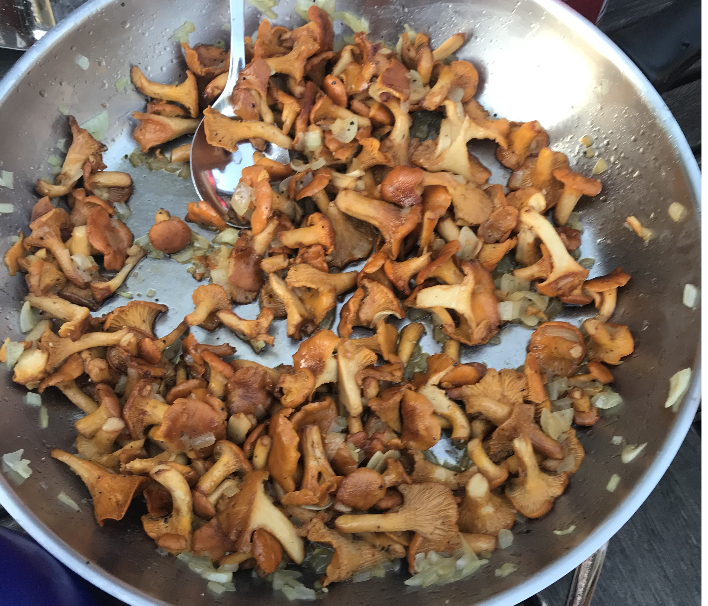

Dining & Dagens Lunch

Restaurants auf dem schwedischen Land haben oft eigenwillige Oeffnungszeiten – am besten vorher online checken. Viele akzeptieren keine Barzahlung mehr, nur Karte oder SWISH.
Dagens Lunch – eine der besten schwedischen Erfindungen
Mo–Fr zur Mittagszeit: Vorspeise oder Salatbuffet, Hauptgang und Kaffee mit Kuchen – alles zwischen 95 und 150 SEK. Einfach beim Reinkommen bezahlen, Tisch suchen, geniessen.
Unsere Empfehlungen
Roedesund Hotellet (Karlsborg) – stilvoll, ambitionierte Kueche, super Service. Unsere Top-Adresse.
Stampens Kvarn (Hjo) – junges Team, tolles Salatbuffet, selbstgebackenes Brot, oft Fischgericht.
Sveas Traedgard (Hjo) – direkt am Stadsparken, junges Team, sehr angenehme Atmosphaere.
Moelltorps Grillen – die sichere Bank fuer Pizza und Kebap in der Naehe.